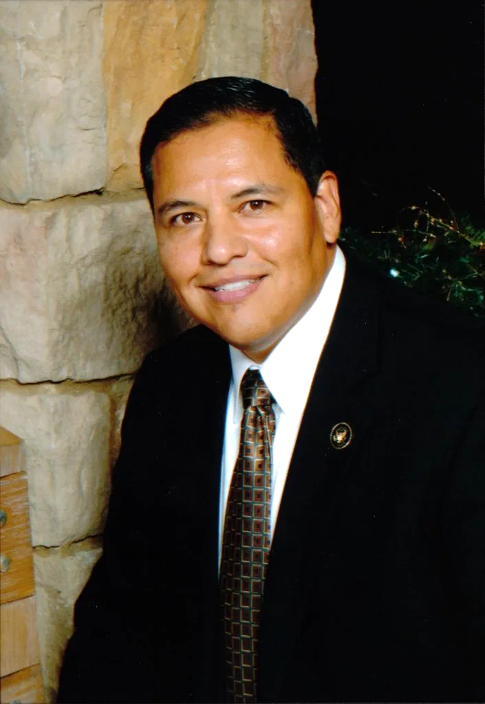
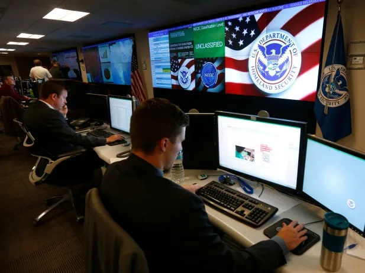

Who We Are
And Why We Are
We augment traditional, Internal Strategy, Internal IT security by focusing on external, Proactive Defense and Forward Defense, that combined with boardroom cyber counterintelligence, yields Preemptive Surround Strategy.
- National Association of Corporate Directors (NACD), Full Board Members, and Faculty
- Recognized by the U.S. Secret Service and the Department of Homeland Security (DHS)
- DHS certified in Cyber Counter Terrorism and Defense
- Founded in 2003, graduate of the Federally Certified 8(a) program
01
Leadership

Israel Martinez
CEO & Global CTO
Israel Martinez is recognized as a leader in boardroom Governance, Cyber Risk, Strategy and Innovation by the U.S. Secret Service; the National Association of Corporate Directors (NACD®); the Wall Street Journal MarketWatch®, and the Forbes Technology Council. He has served as a director or board advisor across all major industries, multiple Presidential Transition Teams and international boards. As a subject matter expert in Cyber Risk and the impact of Artificial Intelligence, he has briefed and/or trained 190+ Fortune 500 board members and/or general counsel including Google; Intel; GE; Walt Disney; Microsoft; Ford; Walmart; Comcast; Bank of America; Humana; 7-Eleven as well as the American and Hispanic National Bar Association Fellows. He was recently awarded, “2025 Cybersecurity Expert of the Year” by the Global Leadership Institute at HMG Strategy – the largest organization of CIOs and CISOs in the U.S.
His current responsibilities include the American Red Cross as a board member for the North Texas Region; NACD® as a Board Leadership Fellow; as an NACD Top 100 Director nominee, nominated by the U.S. Secret Service office of Strategic Intelligence; DHS, serving as an Industry Advisor to CISA; American University Kogod Cyber Governance Center as a Founding Member; the Global Directors & Officers ISAO, as Co-Chairman and Founder; and Axon Global Services as President & CEO. As CEO of Axon, his leadership team services F500 companies, and the United States Government - Axon is one of three U.S. private sector companies chosen to brief The Office of the Director of National Intelligence (ODNI) IAP regarding Supply Chain Risk in Hyper-Connected networks. Axon is commissioned to protect U.S. critical infrastructure by the Congressional Task Force on National and Homeland Security, under the Cybersecurity act of 2015. Axon also services U.S. allies such as designing the cybersecurity strategy for the QZSS Quasi-Zenith Satellite System for the Japanese Cabinet Office of National Space Policy Secretariat which works in partnership with U.S. Space Force. Axon has over 10 years of experience performing for the Japanese Prime Minister Cabinet Level organizations including METI governing cyber risk and strategy for the Tokyo 2020 Olympic Games.
Martinez is recognized by the Wall Street Journal® as, “[One of] the most influential, forward-thinking and successful IT Leaders”; HITEC, where he is listed along with others, such as Facebook’s CIO, as a Top 100 technology influencer & innovator; and the Forbes Technology Council as a contributing editor. He is also the recipient of the U.S. Senatorial Medal of Freedom, “the highest award Republican members of the U.S. Senate can bestow [NRSC]”. For over 20 years he’s also been a bipartisan, bicameral advisor in cyber counter-terrorism and defense to Congress; Several Presidential Administrations as a cyber risk advisor; The Association for Corporate Growth (ACG), office of the CEO; the Global Manufacturing ISAO; the Congressional Hispanic Leadership Institute (CHLI); and the Hispanic National Bar Association (HNBA).
His public discourses include, Business Insider; the Huffington Post; American University KCGC in Washington, D.C.; the White House Office of Science, Technology and Policy; PBS-KERA television; The American Bar Association (ABA); Washington & Lee University (CLAC conference); the Federal Reserve; Government Security News; the U.S. and U.K. intelligence community; CSO Magazine; Forbes CEO conferences; InfoWorld Magazine; Sync Magazine; The Big Shift in IT Leadership ©; Globes in Tel Aviv Israel; The University of Texas in San Antonio, where he received a B.B.A. in Accounting & Information Systems; and CIO/CISO conferences across major cities in the U.S. and internationally.
Martinez holds several professional certifications including, DHS Cyber Counter Terrorism & Defense certification; business strategy CLE at Harvard; FINTECH block chain certification at MIT; and the NACD Master’s Program - achieving the highest level of credentialing for corporate governance professionals.
His corporate training includes eight years with Computer Sciences Corporation (CSC), as a global account executive with Fortune 100 financial services companies. He has led crisis management teams through multiple global events including the 9-11 World Trade Center, and over 200 advanced cyber-attacks and breaches. He has extensive international experience traveling over 2 million air miles negotiating contracts in 20 countries.
02
Team
Due to the sensitive nature of our business we maintain our non-public clients, employees, partners, suppliers and stakeholders in strict confidence - disclosed only under NDA.
Our Executive Team includes:
- A former CEO of an NYSE publicly traded company
- An executive experienced with F500 Directorship and CEOs
- A former District Attorney with commercial experience
- A former 15-year veteran of the intelligence community
- An NACD Full Board Member, DHS certified in Cyber Counterterrorism and Defense
Our Cyber Response Team includes:
- Experienced DHS US CERT team members via our Cooperative Research and Development Agreement
- Experienced CxOs, certified in Cyber Enterprise Risk Management (ERM)
- Experienced Esquires, in civil and criminal law certified in Cyber ERM
- Experienced Directors, certified as NACD Full Board Members and Faculty
- Experienced CISOs, DHS certified in Cyber Counter Terrorism & Defense
- Experienced Project Managers, certified in Six Sigma, ITIL and/or NIST experience
- Experienced Cyber-warfare and cyber counter-intelligence specialists
- Experienced Government and Private sector members
